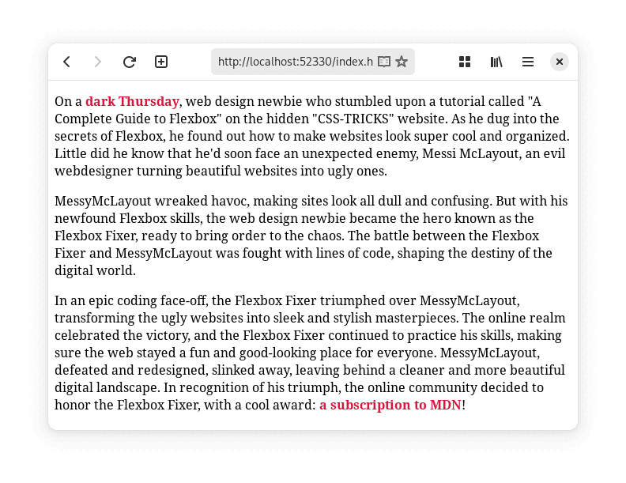

Stap 1: Random verhaal
Gebruik de kennis uit het vorige hoofdstuk om een dynamische website te maken.
De website toont een verhaal met random elementen.

Maak een nieuw project aan en start met deze code:
<p>On a <span id="weer">sunny</span> monday.</p>
document.addEventListener("DOMContentLoaded", function () {
// weer
let randomWordsWeer = ["sunny", "rainy", "misty", "hot", "cold", "dark"]; // Lijst met willekeurige woorden
let chosenWordWeer = Math.floor(Math.random() * randomWordsWeer.length); // Kies een willekeurig woord uit de lijst
document.getElementById("weer").innerHTML = randomWordsWeer[chosenWordWeer]; // Voeg het gekozen woord toen aand de HTML-tag met de juiste ID
});
Stap 2: CSS-styling

- Gebruik CSS om je pagina mooier te maken.
- Voeg een titel toe en geef deze een lettertype gedownload van https://fontesk.com
- Voeg via CSS een achtergrond afbeelding toe, deze kan je fullscreen zetten of herhalen als patroon.
Zorg ervoor dat je tekst duidelijk leesbaar blijft!
Stap 3: Random afbeelding toevoegen
Download enkele afbeeldingen en plaats een random afbeelding op je website via JavaScript-code.
Het is de bedoeling dat je een afbeelding toevoegt op je pagina, niet dat je de achtergrond afbeelding aanpast.
Zorg dat alle afbeeldingen bij elkaar passen en niet een andere stijl of een ander thema hebben.
TIP
Je kan A.I. image generators gebruiken om afbeeldingen in een gelijkaardige stijl en met een gelijkaardig onderwerp te genereren.
Stap 4: Random CSS
Maak de CSS-styling van je pagina ook random.
Bijvoorbeeld als je personage een wood elf is kan je zijn of haar naam in het groen zetten, maar als je personage een dragon is kan je zijn of haar naam in het rood zetten. Of als je een water magic potion drink kan je deze in een blauwe achtergrond geven.
Stap 5: Random getal
Naast random woorden kunnen we ook random getallen genereren.
Met deze code genereer je een willekeurig komma getal tussen 0 en 1:
Math.random();
Om een random komma getal te genereren tussen bijvoorbeeld 0 en 9, kunnen we het vorige getal maal 10 doen, zodat het random getal ook 10 keer zo groot kan zijn:
Math.random() * 10;
Willen we geen komma getal, maar een geheel getal kan kunnen we het random komma getal afronden met de Math.floor() functie.
Deze code geeft ons een willekeurig geheel getal tussen 0 en 9:
Math.floor(Math.random() * 10);
Willen we een random getal tussen 1 en 10 in plaats van tussen 0 en 9, dan kunnen we het random getal +1 doen, zodat het geen random getal meer is tussen 0 en 9, maar tussen 1 en 10:
Math.floor(Math.random() * 10) + 1;
Voeg nu een random getal toe aan je verhaal.
Stap 6: Variabele
info
Variabelen zijn een essentieel concept in programmeren en worden gebruikt om gegevens op te slaan en te manipuleren.
In JavaScript worden variabelen gedeclareerd met het sleutelwoord var, let of const.
Var
var x = 5;
info
Dit is de oude manier van variabelen declareren in JavaScript en wordt niet vaak meer gebruikt omdat deze problemen geeft met scope.
Let
let y = 10;
info
Dit is de moderne manier van variabelen declareren.
Let zorgt voor block-scoping, wat betekent dat de variabele alleen toegankelijk is binnen het blok waarin deze is gedeclareerd.
Let komt van het Engels en betekent laat of toestaan.
Bijvoorbeeld let y = 10; of Let’s give y a value of 10”.
Const
const pi = 3.14;
info
Met const declareer je een constante variabele, dit je zeggen dat je de variabelen later in je code niet meer kan veranderen.
Getallen
let naam = "Maes";
let level = 100;
info
Om tekst in een variabele te steken gebruik je " symbolen.
Declareer een variabele die een getal opslaat, en declareer een variabelen die een tekst op slaat en steek deze op meerdere plaatsen in je verhaal.